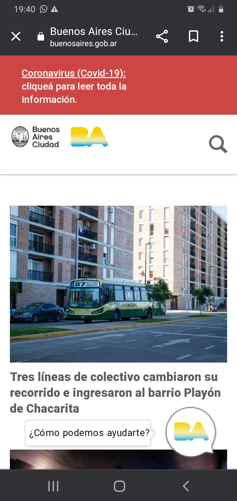

White Space and Clean Design

I like how the Buenos Aires Web Site uses the White space adding padding. It's makes the Web page so organize
PARC: Contrast
I think this is a good example for contrast, because this web site has many colors but the content is still readebly
PARC: Repetition
I think this is the perfect example for "repetition" because social media has tons of information, so they build up their app and web site with the same colors, paddings, sizes. And when you are in a social media in this case Instagram, you automatically know you are in Instagram for it's particular design